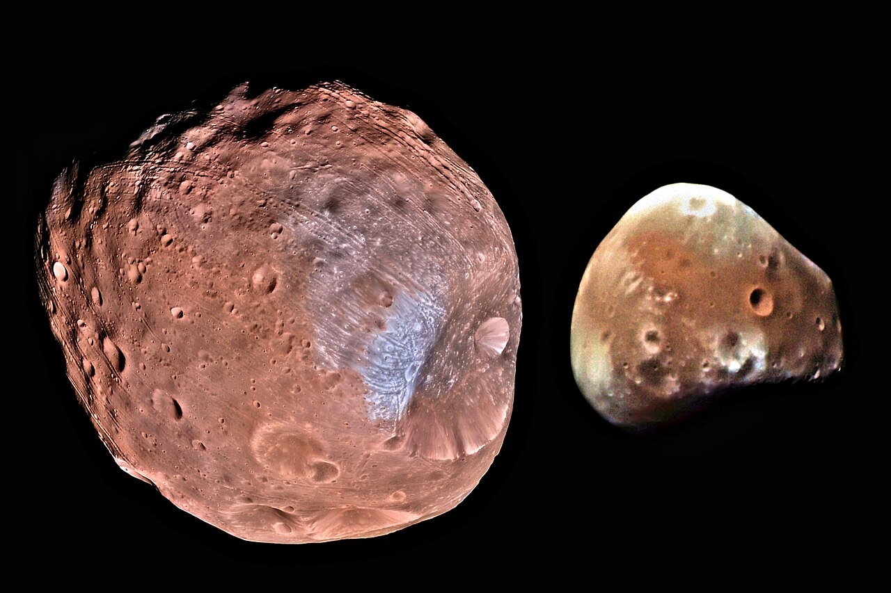

El Nostre Sistema Solar
El Sistema Solar és el sistema planetari que lliga gravitacionalment el Sol i els objectes que l'orbiten directament o indirectament. Entre aquests objectes es troben els vuit planetes majoritaris, planetes nans i milers d'altres cossos com asteroides i cometes.
Els planetes que formen part del nostre sistema solar són:
- Mercuri
- Venus
- Terra
- Mart
- Júpiter
- Saturn
- Urà
- Neptú
Dades Tècniques
| Característica | Valor |
|---|---|
| Massa | 6,39 × 10^23 kg |
| Volum | 1,63 × 10^11 km³ |
| Densitat | 3,93 g/cm³ |
| Diàmetre | 6.779 km |
| Gravetat | 3,711 m/s² |
| Paràmetre | Detall |
|---|---|
| Pressió | 0,636 kPa |
| Temp. mínima | -153 °C |
| Temp. màxima | 20 °C |
Galeria d'imatges: Mart i les seves llunes
Mart té dos petits satèl·lits naturals: Fobos i Deimos. També es pot veure la superfície de Mart i un detall de la seva geologia.



Estructura i Geologia
Detalls d'informació rellevant sobre l'estructura i composició del planeta:
- Estructura interna: Mart té un nucli metàl·lic dens envoltat per un mantell de silicat i una escorça menys densa.
- Geologia: Mart és un planeta tel·lúric amb cràters d'impacte, volcans (com el Mont Olimp), valls i deserts de pols.
- Sòl: El sòl martià és ric en òxid de ferro, el que li dona el seu color vermell característic.
- Geografia: Presenta grans unitats com el Valles Marineris i les calotes polars formades per gel d'aigua i CO2.
- Atmosfera: L'atmosfera de Mart és tènue i composta principalment per un 95% de diòxid de carboni.